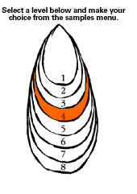
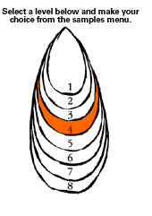

| Level
4: A Group Soundscape
PLANNING AND ASSESSMENT
Planning
Possible scenes which might lend themselves to having a soundscape
include:
- A nightmare scene where voices and sound build terror.
- A scene where someone is being followed hearing the outside
sounds and the sounds inside the head.
- A scene at a fairground or amusement park where someone is
lost, or being chased and the sounds fit the action like the soundtrack
of a film.
- A sports scene – the sounds before a game and/ or the tension
building during a game or towards the final moment.
- The sounds to accompany a machine starting up gathering speed
and perhaps going out of control or breaking down.
Learning example
- Students will discuss the contrasts (sound and silence, darkness
and light, movement and stillness) used in the soundscape and
the effect that each of these has.
Introduction
The purpose of a soundscape is to enhance the mood and tension
of a scene. It is an opportunity to explore mood by means of sound.
It allows students to listen and to plan to isolate or highlight
particular sound effects without creating a cacophony of sound.
Students will appreciate how sounds fit into the scene and fit together
to create an effect. They will improvise with sound from any sources
(voice, body sound, found sound in the room, tuned and untuned instruments)
and use imagination to create interesting effects. This convention
presents an opportunity for recording and then distorting or exaggerating
sound for additional effect.
Exploration
The students would first have to explore/ play to discover the
sounds, the range of sound, the ways in which sound can be altered,
for example, the found sound sources within the room and the different
ways sound may be produced using by shaking, hitting, plucking, and
scraping a variety of sound makers. Students may also find appropriate
extracts of recorded music, or sound effects, or use a synthesiser.
Experimentation
Students could experiment with combinations of body sound, voice,
words, instruments, recorded sound – to create the most interesting
ways to build tension by varying:
- the length of a note or sound,
- a way a sound is repeated,
- the variation in pitch and volume,
- the timbre or the harshness of a sound.
Creating the soundscape
This learning example would probably be part of a wider unit of
work and is unlikely to be taught in isolation. It may be combined
with "Scenes on a Current Issue". The students would have been working
on devising a piece of drama work involving perhaps a scene involving
conflict or a nightmarish situation. The soundscape is a way of
encouraging them to think more specifically about how the tension
in the scene could be enhanced.
This learning example may follow a sequence such as this:
- With eyes shut, concentrate on the visual images and create
the sounds for a story being narrated by the teacher, for example, "Night
is falling in a lonely valley. The wind moans. Rain falls. The
hunter sniffs the wind and begins to stalk its prey."
- Students can individually explore different body sounds (clapping,
patting, scratching, creating shared sounds with a partner.
- Students can then explore making sounds together for example
imitating instruments in a band/ orchestra.
Students may develop their own instruments from a set of junk resources
including rice, dried beans, cardboard and plastic tubes, old plastic
drink bottles, old kitchen tins, whistles, trays containing gravel,
jars of different size, and other recycled materials.
After exploration and development the students should focus on
the task of providing sound effects for a particular scene.
Assessment
Assessment Activities may include:
- Recording the soundscape. For use with the scene. Students
present recorded tape for analysis and assessment.
- Students may present the instrument they have made for the
soundscape.
- Task descriptions will help to contain the action to help keep
assessment focused:
- Use at least three untuned instruments, three body sounds and
one found sound voice
- Set a two-three minute time limit.
- The following questions could provide a focus for assessment:
- Did the soundscape build tension?
- What section worked best?
- How were problems resolved?
- How could the soundscape be improved?
- What was learned about sound and sound making?
- A research topic could be explored – the history of sound effects,
how sound effects were created in radio drama and in theatre and
films.
Reflection
During or after the soundscaping activity the teacher might ask
some or all of the following questions to assist the students to
reflect on the work they have just completed:
- What sort of sounds helped to create the mood for the scene?
- What sounds helped to build tension?
- What sounds created a dropping away of tension?
- Change the sequences of sounds to generate a different mood?
- What does this change do to the mood you were attempting to create?
- If you had unlimited resources what sorts of sounds might you add
to your Soundscape?
- Listen to the Soundscape with your eyes closed and...
[Back
To Top]
|

 
